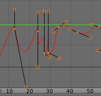

Editing¶
By default, when new channels are added, the Graph Editor sets them to Edit Mode.
Selected channels can be locked by pressing Tab.
Many of the hotkeys are the same as the viewport ones, for example:
Gto grabRto rotateSto scaleBfor border select/deselect
And of course you can lock the transformation along the X (time frame) or Y
(value) axises by pressing X or Y during transformation.
For precise control of the keyframe position and value, you can set values in the Active Keyframe of the Properties Region.
Insert Keyframe¶
Reference
Ctrl-LMB, Ctrl-Shift-LMBCtrl-LMB inserts a keyframe to the active F-Curve at the mouse position.
The newly added keyframes will be selected, making it easier to quickly tweak the newly added keyframes.
All previously selected keyframes are kept selected by using Ctrl-Shift-LMB.
Transform Snapping¶
When transforming keyframes with G, R, S,
the transformation can be snapped to increments.
Snap Transformation to 1.0 Ctrl.
Divide Transformation by 10.0 Shift.
Snap¶
Reference
Shift-SKeyframes can be snapped to different properties by using the Snap Keys tool.
- Current Frame
- Snap the selected keyframes to the Time Cursor.
- Cursor Value
- Snap the selected keyframes to the Cursor.
- Nearest Frame
- Snap the selected keyframes to their nearest frame individually.
- Nearest Second
- Snap the selected keyframes to their nearest second individually, based on the FPS of the scene.
- Nearest Marker
- Snap the selected keyframes to their nearest marker individually.
- Flatten Handles
Flatten the Bézier handles for the selected keyframes.
Flatten Handles snapping example.¶ Before Flatten Handles.
{kind=link}
{kind=link}
Mirror¶
Reference
Shift-MSelected keyframes can be mirrored over different properties using the Mirror Keys tool.
- By Times Over Current Frame
- Mirror horizontally over the Time Cursor.
- By Values over Cursor Value
- Mirror vertically over the Cursor.
- By Times over Time 0
- Mirror horizontally over frame 0.
- By Values over Value 0
- Mirror vertically over value 0.
- By Times over First Selected Marker
- Mirror horizontally the over the first selected Marker.
Clean Keyframes¶
Reference
XClean Keyframes resets the keyframe tangents on selected keyframes to their auto-clamped shape, if they have been modified.

F-Curve before cleaning. |

F-Curve after cleaning. |
Clean Channels¶
Reference
XActs like the Clean Keyframes tool but will also delete the channel itself if it is only left with a single keyframe containing the default property value and it's not being used by any generative f-curve modifiers or drivers.
Note
The modified curve left after the clean tool is run is not the same as the original,
so this tool is better used before doing custom editing of f-curves and after initial keyframe insertion,
to get rid of any unwanted keyframes inserted while doing mass keyframe insertion
(by selecting all bones and pressing I for instance).
Smoothing¶
Reference
Alt-OThere is also an option to smooth the selected curves , but beware: its algorithm seems to be to divide by two the distance between each keyframe and the average linear value of the curve, without any setting, which gives quite a strong smoothing! Note that the first and last keys seem to be never modified by this tool.
|
F-Curve before smoothing. |

F-Curve after smoothing. |
Sampling and Baking Keyframes¶
- Sample Keyframes
Shift-O Sampling a set a keyframes replaces interpolated values with a new keyframe for each frame.

F-Curve after sampling.
- Bake Curves
Alt-C - Baking a curve replaces it with a set of sampled points, and removes the ability to edit the curve.
{kind=link}
Bake Sound to F-Curves¶
Reference
The Bake Sound to F-Curves tool takes and sound file and uses its sound wave to create the animation data.
- Lowest frequency
- Cutoff frequency of a high-pass filter that is applied to the audio data.
- Highest frequency
- Cutoff frequency of a low-pass filter that is applied to the audio data.
- Attack time
- Value for the hull curve calculation that tells how fast the hull curve can rise. The lower the value the steeper it can rise.
- Release time
- Value for the hull curve calculation that tells how fast the hull curve can fall. The lower the value the steeper it can fall.
- Threshold
- Minimum amplitude value needed to influence the hull curve.
- Accumulate
- Only the positive differences of the hull curve amplitudes are summarized to produce the output.
- Additive
- The amplitudes of the hull curve are summarized. If Accumulate is enabled, both positive and negative differences are accumulated.
- Square
Gives the output as a square curve. Negative values always result in -1, and positive ones in 1.
- Square Threshold
- All values lower than this threshold result in 0.
Show/Hide¶
- Hide
H - Hide selected curves.
- Hide Unselected
Shift-H - Show only the selected curve (and hide everything else).
- Show Hidden
Alt-H - Show all previous hidden curves.